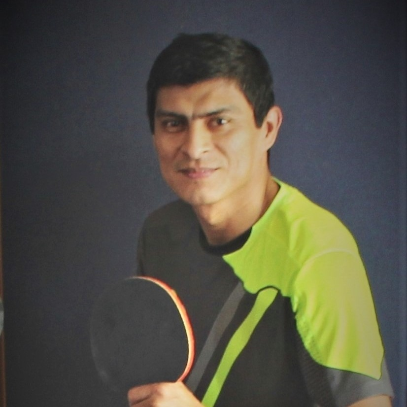

Biografia
David Eleazar Guzmán Guardado, nacido en San Salvador el 16 de septiembre de 1974, el mayor de 4 hermanos
Actualmente casado con 2 hijos , con experiencia laboral de mas de 20 años en el area de informatica en puestos de jefatura, servicedesk,
programacion, administrador de base de datos, administrador de redes y administrador de infraestructura
Estudios
Educación básica en Liceo Cristiano Central, educacion universitaria Universidad de El Salvador en Ingeniera de Sistemas informáticos.
Continuando la carrera por equivalencias en Universidad Don Bosco.
Hobbies

Entre los hobbies mas practicados estan la lectura y deportes como futbol, basquetball y pingpong, en este ultimo siendo miembro activo del club de pingpong de FUNDASAL